01
Vision
Không nhìn một giao dịch như một điểm kết thúc. Nhìn toàn bộ hành trình khách hàng, đội ngũ và hệ thống để xác định thứ cần được xây cho giai đoạn tiếp theo.
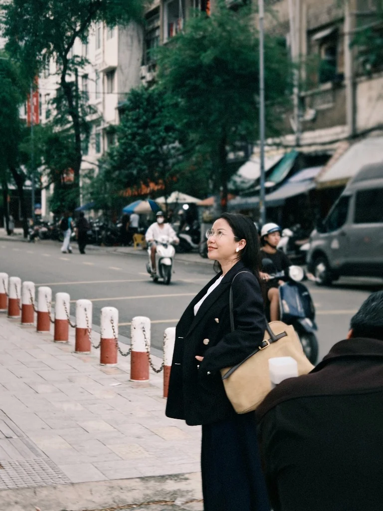
Tổng Giám Đốc · Unite Group
Manifesto
Kinh doanh không phải là bàn cờ của những con số khô khan. Đó là nghệ thuật lãnh đạo — nơi tầm nhìn, hệ thống và con người cùng tạo nên một tổ chức có khả năng phát triển lâu dài.
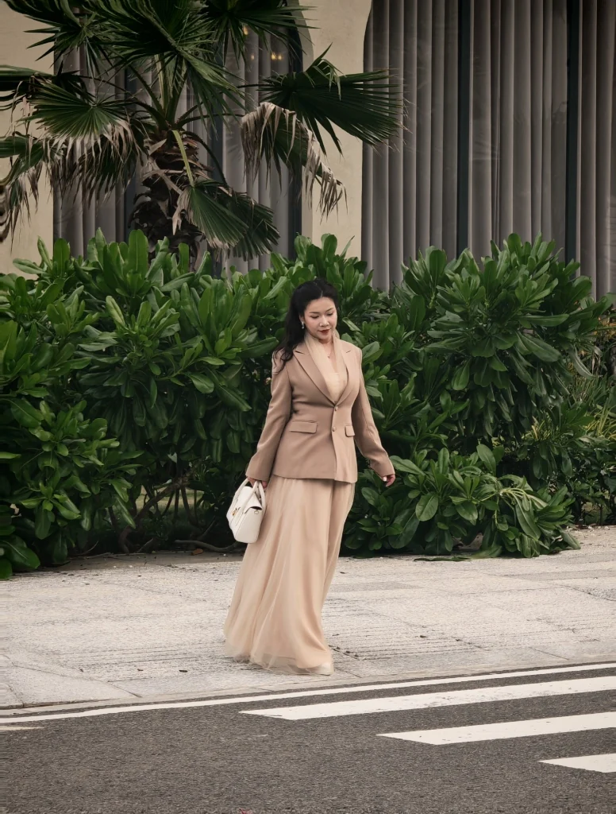
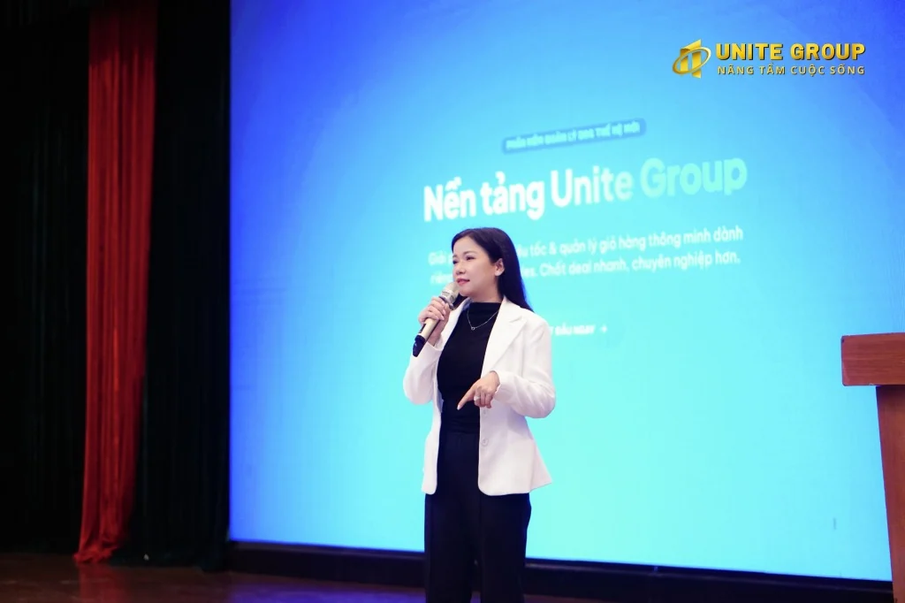
Về Koko Linh
Được biết đến với tinh thần quyết liệt và khả năng thực thi nhạy bén, Koko Linh đại diện cho hình mẫu “Visionary Operator” — không chỉ đưa ra định hướng mà còn đi sâu vào cách tổ chức vận hành, phát triển đội ngũ và xây dựng văn hóa doanh nghiệp.
Hành trình bắt đầu từ cuối năm 2020 với tên gọi Unite Home; đến tháng 03/2021, pháp nhân Unite Group chính thức hoạt động. Từ đó, hệ thống tiếp tục mở rộng theo hướng chuyên nghiệp hóa bất động sản cho thuê tại TP.HCM.
Sự khác biệt nằm ở một DNA trẻ, thực chiến và tập trung vào con người: tăng trưởng không chỉ đến từ doanh số, mà từ khả năng tạo ra những người có thể tiếp tục dẫn dắt.
The Operator
Tầm nhìn chỉ tạo ra phương hướng. Hệ thống biến phương hướng thành thói quen vận hành. Con người biến hệ thống thành quy mô. Đó là cách một ý tưởng được chuyển thành tổ chức có khả năng tự lớn lên.
How She Builds
Ba lớp tư duy tạo nên phong cách vận hành: nhìn đủ xa để biết mình đang đi đâu, xây đủ chắc để đội ngũ có thể chạy, và thực thi đủ nhanh để biến ý tưởng thành kết quả.
Không nhìn một giao dịch như một điểm kết thúc. Nhìn toàn bộ hành trình khách hàng, đội ngũ và hệ thống để xác định thứ cần được xây cho giai đoạn tiếp theo.
Tăng trưởng bền vững cần nhiều người có khả năng tự ra quyết định, tự chịu trách nhiệm và tiếp tục phát triển người khác — không chỉ một người giỏi đứng ở trung tâm.
Ý tưởng phải được chuyển thành quy trình, nhịp làm việc, tiêu chuẩn và dữ liệu có thể theo dõi. Khi đó, chiến lược mới thật sự đi vào vận hành hàng ngày.
Hành Trình Kiến Tạo
Scroll to move through time →
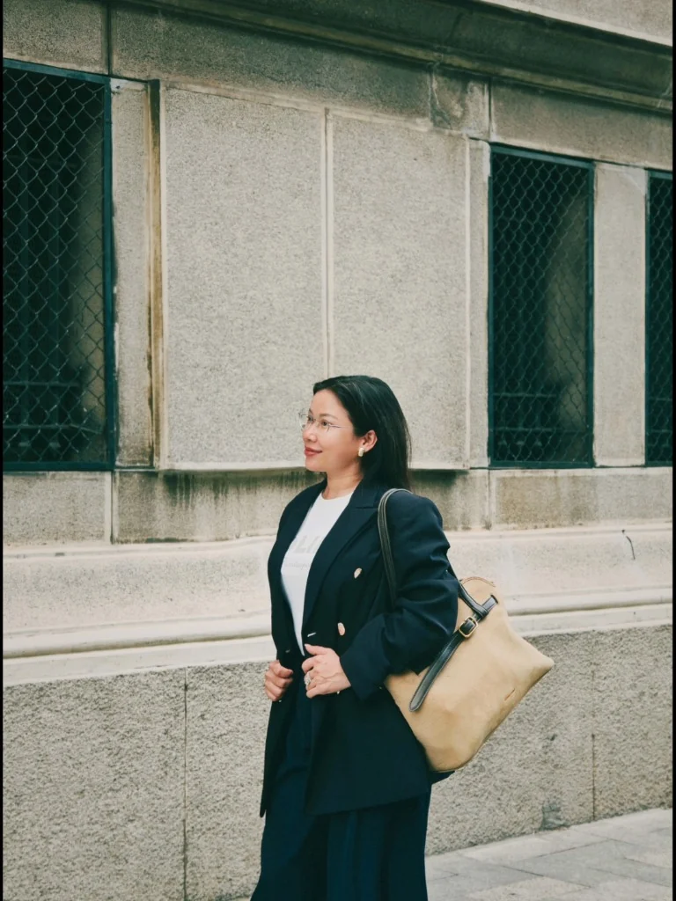
Hành trình bắt đầu vào cuối tháng 10/2020 với tên gọi Unite Home — giai đoạn đặt nền móng cho cách làm bất động sản cho thuê theo hướng hệ thống hơn.
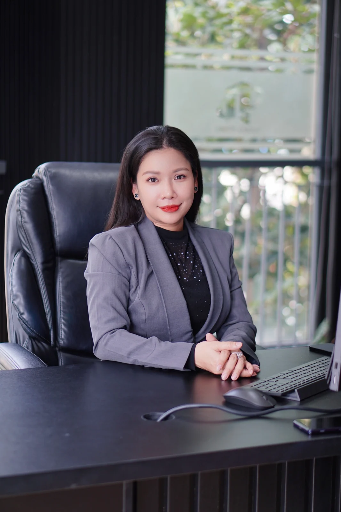
Ngày 18/03/2021 là mốc hoạt động pháp lý của Công ty TNHH TMDV BĐS Unite Group — mở ra giai đoạn vận hành với cấu trúc doanh nghiệp rõ ràng hơn.
Hệ thống tiếp tục mở rộng footprint, phát triển văn hóa đội ngũ trẻ và tăng cường các hoạt động đào tạo, vinh danh và gắn kết để tạo lực tăng trưởng từ bên trong.
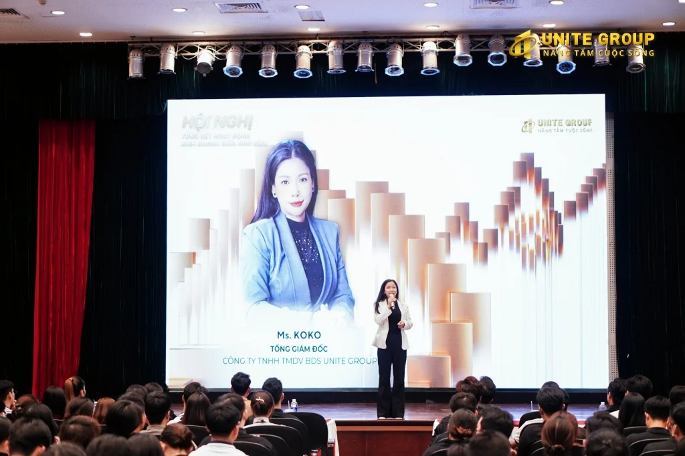
Unite Group được giới thiệu với mạng lưới hơn 10.000 căn hộ và quy mô hơn 300 nhân sự; đồng thời mở thêm những chương mới như UN1TE ONE và các quan hệ hợp tác chiến lược.
Largest Operating Proof
Một case study về cách xây mạng lưới vận hành bất động sản cho thuê, phát triển đội ngũ và biến culture thành một phần của hệ thống tăng trưởng.
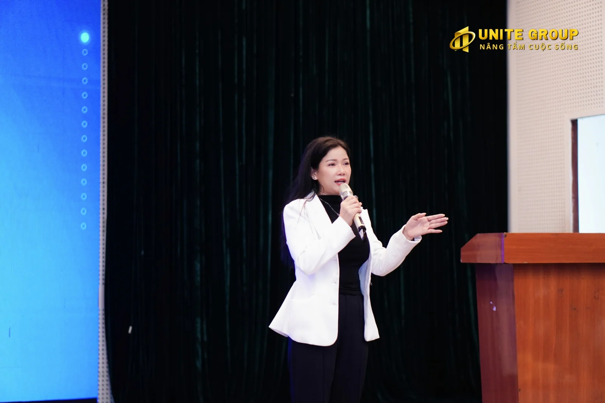
Core BusinessKết nối chủ nhà và khách thuê thông qua giỏ hàng, quy trình bán hàng và hệ thống vận hành được chuẩn hóa theo quy mô.
Căn hộ / inventory được các nguồn giới thiệu doanh nghiệp ghi nhận trong mạng lưới.
Đội ngũ được xây quanh đào tạo, nhịp vận hành, leader pipeline và cơ chế ghi nhận thành tích.
Một lớp proof bên ngoài cho định hướng kết nối nền tảng, nguồn dữ liệu và thị trường bất động sản.
Dấu mốc mở ra một chương vận hành mới và tham vọng mở rộng quy mô theo hệ thống.
People Leadership
“Một tổ chức chỉ thật sự lớn lên khi những người bên trong nó cũng lớn lên.”
Đào tạo, vinh danh, team building và những cuộc đối thoại trực tiếp không phải phần trang trí của văn hóa. Chúng là cách tổ chức truyền tiêu chuẩn, tạo động lực và biến giá trị thành hành vi có thể lặp lại.
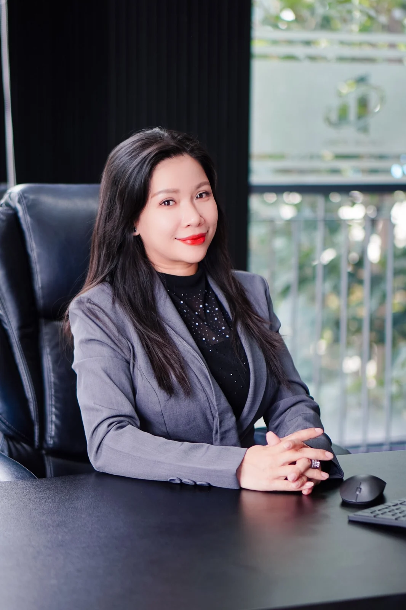
Point of View
Một website cá nhân không chỉ cần kể “đã làm gì”, mà phải cho thấy cách một người nhìn công việc, con người và tăng trưởng.
Beyond The Office
Thương hiệu cá nhân không chỉ tồn tại trong phòng họp hay trên sân khấu. Những khoảnh khắc đời thường — một bước đi, một góc thành phố, một lựa chọn phong cách — giúp bức chân dung lãnh đạo trở nên gần, thật và có cá tính hơn.
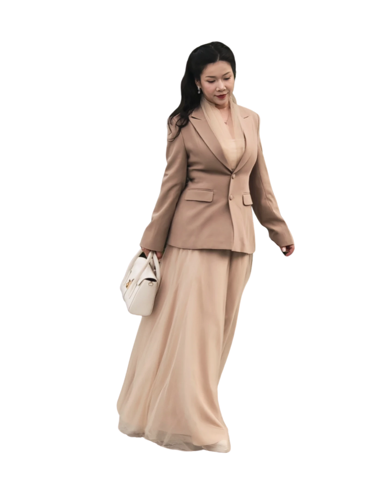
Selected Moments
Từ office portrait đến walking shot và sân khấu — cùng một nhân vật, nhưng nhiều lớp năng lượng khác nhau.
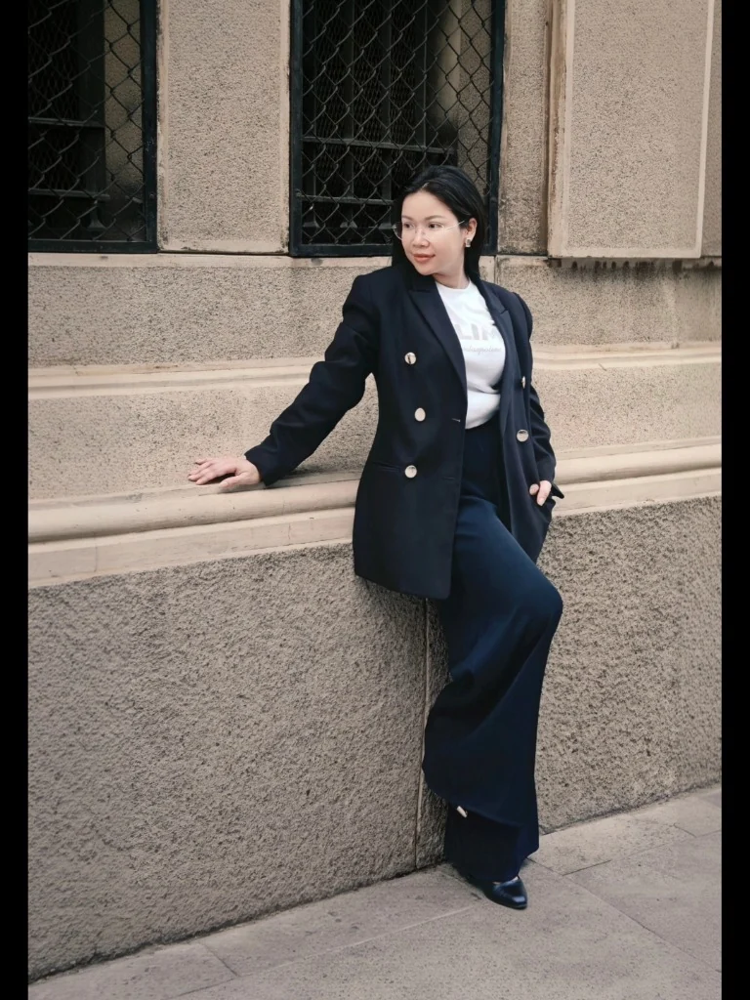
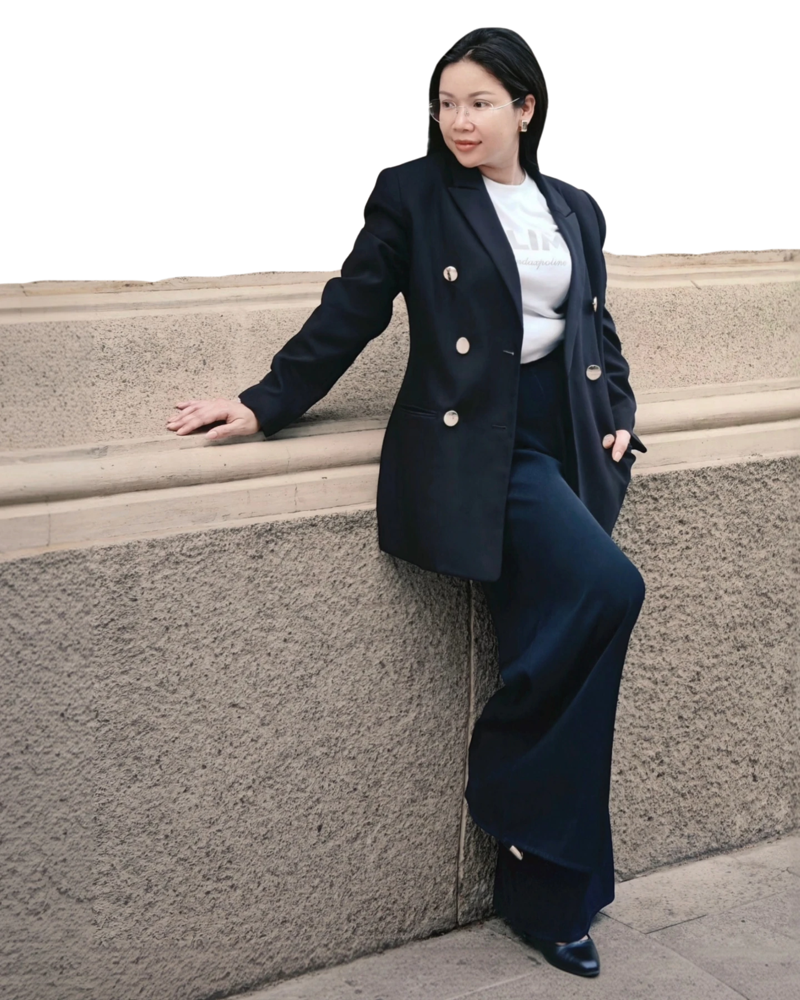
Partnership · Speaking · Business
Sự hợp tác tốt thường bắt đầu từ một cuộc trò chuyện rõ ràng: về điều đang được xây, vấn đề cần giải quyết và giá trị hai bên có thể cùng tạo ra.
Liên hệ